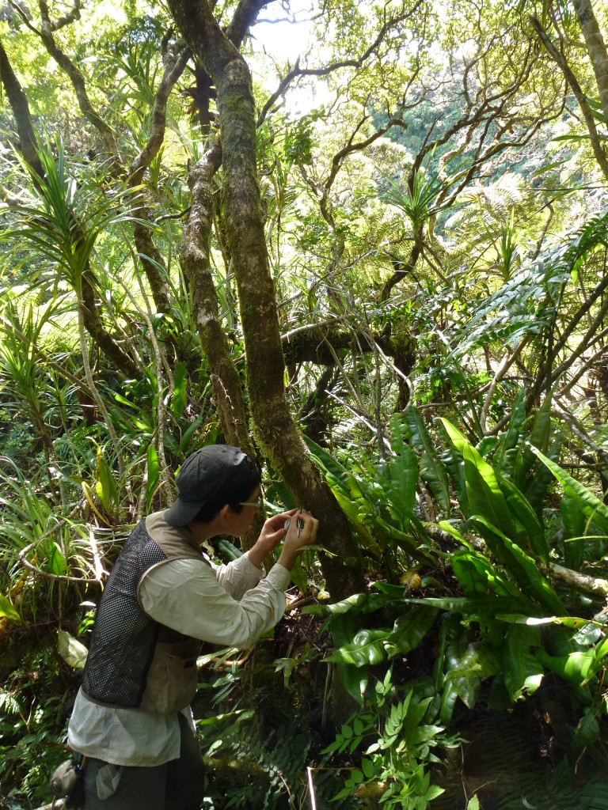

4th generation Japanese-American, now living in Japan
Research focuses on the ecology and evolution of ferns

Two groups of plants that have traditionally been studied together: ferns and lycophytes
They are all vascular plants that reproduce via spores and lack flowers
Collectively, these are called “pteridophytes”. Botanists used to think the two groups were closely related, but now DNA has shown that is not so.
Ferns and seed plants share a common ancestor
This makes the fern lineage and the seed plant lineage equally “old”
Many of fern species alive today evolved as epiphytes on seed plants.
“Sporophyte”: The larger form that produces spores
“Gametophyte”: Much smaller form that produces gametes (egg and sperm)
Increasing ability to aggregate and share data is revolutionizing biology
Example: iNaturalist
Open source started in software, but can also be applied to science
The foundation of science is the scientific method and reproducibility
The idea of open science is that all data, methods, and results should be publicly and freely available
I always publish my code and data along with the paper
I develop open-source software and databases for research
One of my projects builds on open data, and tries to give back to fuel more research
FTOL = “Fern Tree of Life”. Goal is simple: build a phylogenetic tree including all fern species on the planet (about ~12,000).
Start where the data are. GenBank is a public repository of all published DNA sequences.
My code crawls GenBank and downloads all fern sequences. It then (mostly) automatically detects and removes misidentifications, then conducts the analysis to produce a phylogenetic tree.
This had been done before, but always in a “one-off” manner. Previous researchers did not try to keep the tree updated (remember, the primary currency of science is publications. Once the paper is published, few scientists try to update their results).
FTOL is built (mostly) automatically every three months (if I’m not too busy)
The initial publication of FTOL was the largest fern phylogeny to date.
Number of total fern sequences (and in particular, whole plastomes) has steadily increased since the initial publication.
Discovery of convergent evolution (same phenomenon evolved in two different groups of organisms) of extra-floral nectaries in ferns and flowering plants
Some ferns recruit ants for defense by bribing them with sugar, and they did this as they transitioned to living in trees. SO COOL.
Science thrives in the open.
We need to incentivize maintenance of databases and software
Ferns are cool!
Scientists like to say they study the ‘omics’ of something (started with “genomics”)
Museomics is the idea that we can study the DNA of museum (or herbarium) specimens
This is really important because museums are where we store the type specimen of a species
Ferns are not as showy as flowers, but are subtly beautiful in their own monochromatic way
Ferns have a unique life cycle (more on that soon!)